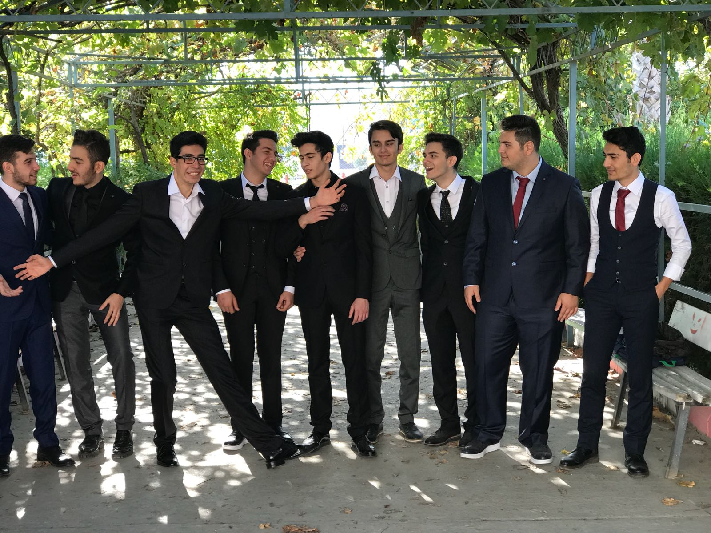
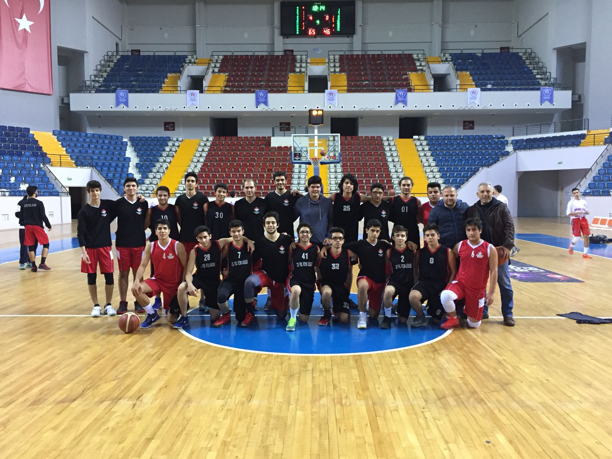
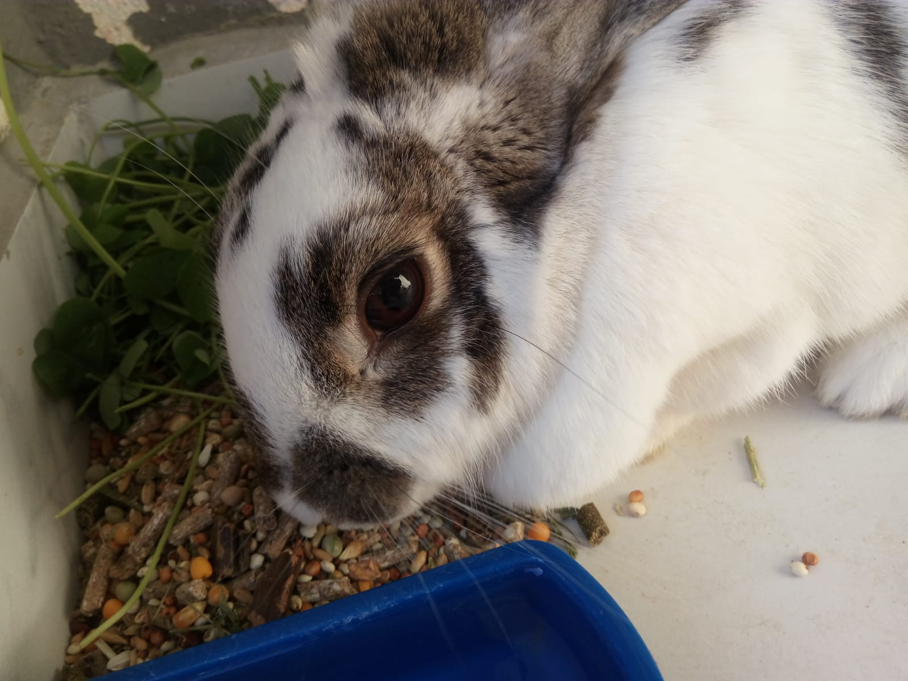

|

|
|

 |
Merhabalar, ben Mahmut Can Bayram.Şu anda Sakarya Üniversitesi Bilgisay Mühendisliiği Bölümü 1.Sınıf öğrencisiyim.Aralık 1999 Mersin doğumluyum.Aslen Malatya'lıyız ancak doğduğumdan beri Mersin'de yaşıyoruz.2004-2006 yılları arasında
,annemin de öğretmenlik yapmış olduğu okul olan, Vali Sabahattin Çakmakoğlu Okulu'nda anaokulu okudum.Anaokulunu bitirdikten sonra evimize çok yakın bir okul olan
Çankaya'da hem ilkokulumu hem de ortaokulumu bitirdim.Henüz ilk defa uygulanacak olan 'TEOG' sınavında başarılı sayılabilecek bir sonuç elde ederek 2014 yılında Mersin 75.Yıl Fen Lisesi'ne
yerleştim.Ve burada çok güzel anılarla dolu olan 4 senem geçti.Birbirinden güzel dostluklarım oldu.
Basketbol çocukluğumdan beri en sevdiğim spor olmuştur.Hem izlemek hem de oynamaktan büyük keyif almışımdır.6.Sınıftayken küçük bir takıma girmiştim.
Ancak ailemin derslerimi etkileyeceğini düşündüğü için bırakmıştım.Sonrasında lise yıllarımda okullar arası turnuvalarda okul takımında oynamıştım.
Yeni yerler keşfetmeyi, fotoğraf çekmeyi ve hayvanları da çok severim.Uzun yıllar evimizde bir tavşan misafir etmiştik.:))
Evimize Bilgisayar erken yaşlarımda alındığı için bilgisayarda oyun oynamak benim için her zaman büyük bir keyif, bazen de öğrenme ve keşfetme aracı olmuştur.
Bilgisayar başında çok vakit geçirdiğim için de sayısız müzik dinledim.Favori olarak nitelendirebileceğim sinema filmim, dizim, şarkım ,türküm ya da herhangi bir kitabım yok.
Çünkü her eser kendi içinde çok özeldir.